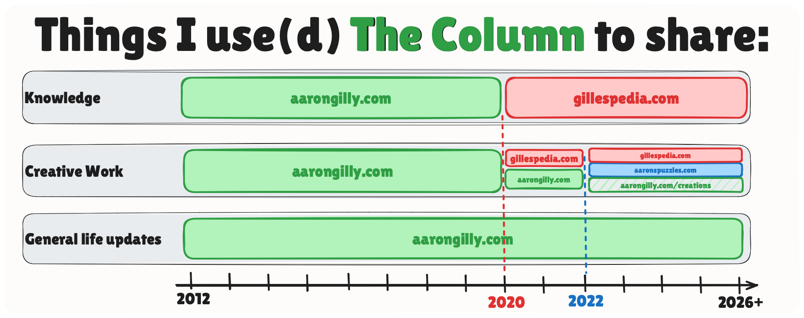

Explaining lots of weirdness going on with this hobby of mine
I’ve been thinking about this blog a lot lately.
About the Column
The Column used to serve a lot of purposes for me - but most now have better homes.

- Gillespedia is better than this ever was for sharing knowledge.
- The Creations page is better than individual blog posts.
- Aaron’s Puzzles is better for interactive content.
That means The Column is mostly for general life updates… which I just don’t share as much any more.
So - what am I saying here? See the Top 5 for more.
Addressing some blog weirdness
Column Numbering
This is Column #218… but it’s actually Column #499. Turns out many years ago I accidentally skipped a few numbers. So 499 was followed by 357, was followed by 253, was followed by 218 (this post).
This concludes my back-filling of Columns. **Next post will be proper Column #500**.
RSS Apology Number 3 or 4
I fixed my RSS Feed. Then re-broke it. Sorry about that.
It should™️ be fixed for good this time.1
Details if you're interested:
sequenceDiagram participant Computer participant Laptop participant Blog participant You Computer->>Blog: RSS Fix & new Column Blog-->>You: Working Email Computer->>Blog: New Column Blog-->>You: Working Email Laptop->>Blog: RSS UNFIX & new Column Blog-->>You: Busted email Blog->>Laptop: RSS Fix
Everything Else
General Life Updates
Honestly I don’t do enough of these. I think it is, in large part, due to the stabilization of life that comes with a house, a wife, 2 kids, and a steady job.
We are in a very good, very happy place.
The move away from Lawrence was tough, but in reality it’s been a dream.
It is fall - and it’s beautiful around here. I walk, bike, and drive around the neighborhood and constantly am awestruck by the grandeur of the trees, waving at me and shedding leaves that fall always more slowly than seems natural.
I’m looking older. Grays and wrinkles. Maybe it’s the kids. Maybe it’s the 40th birthday happening tomorrow2.
My elder son has picked up chess. Immediately he’s basically on par with me - which is impressive in equal measures on his part and mine (in two very different ways).
My job is overwhelming and frustrating and it’s easily the best job I’ve ever had. I get to work with people I love spending time with. I get to do the kind of work I love doing. We work on problems that are truly worth the work. Everyone should be so lucky.
Melissa is singing in her 2nd international championship competition in as many months. Her quartet has charm and talent up to their eyeballs in the worst of times. You should experience them in person. It’s truly awe inspiring.
The family cat, Loki, is laying across my forearms and lap as I write this very sentence.
I’m looking forward to coffee tomorrow morning.
The big things are going right. The little things are going right.
The Duality of AI
AI is the most exciting, terrifying thing that’s happened in my life.
It’s wonderful and terrible.
It helps me get so much done, but also keeps me doing things I don’t really care about.
It will be our savior and our destroyer.
I wake up each morning knowing anything is possible.
Top 5: Directions I may take my various online things
As alluded to above, my online hobbies are spread thin and overlapping with one-another.
- https://aarongilly.com - the original home for everything
- https://aarongilly.com/creations - recently added aggregation point for things
- https://gillespedia.com - the knowledge-focused spin-off
- https://aaronspuzzles.com - the one housing my annual bit of creative fun
- https://datajournal.guide - the “how to guide” about my Data Journal
So - here are 5 moves I might make, from least likely to most likely.
5. Consolidate everything to https://aarongilly.com
Nix the other URLs. Make the blog, creations, notes, and anything else I make just a part of this site.
4. Slow down writing Columns
Keep the other URLs. Don’t kill The Column3 - but accept that it’s no longer that useful for my needs. Go from ~24 Columns/year to more like ~6.
3. Change nothing
Always an option.
2. Nix https://datajournal.guide
I made https://datajournal.guide with the dream of having one person find my thing and go “huh, I should do that”. I don’t think that’s going to happen.
1. Some hybrid of the above
As per usual, when “some hybrid” is included in the options - it’s usually the one that gets picked.
Quotes:
That Jigglypuff is a stone cold killer - Don B
Christmas is my favorite Halloween - My 6 year old